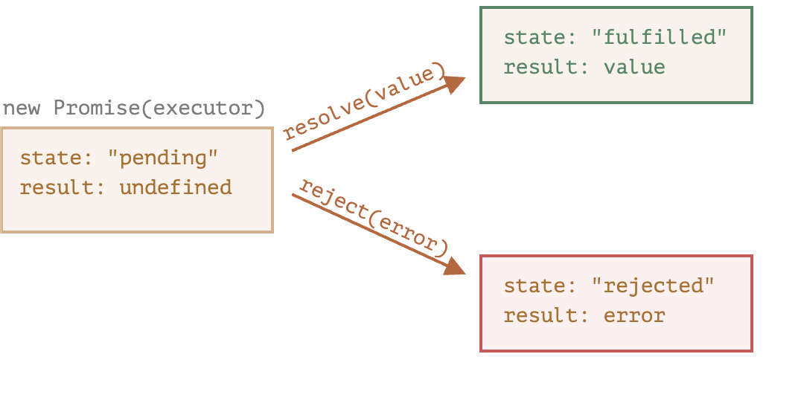
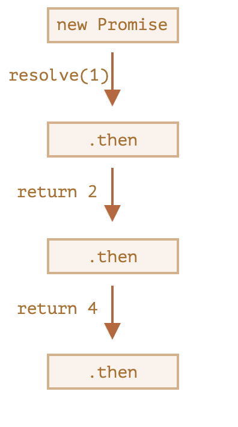
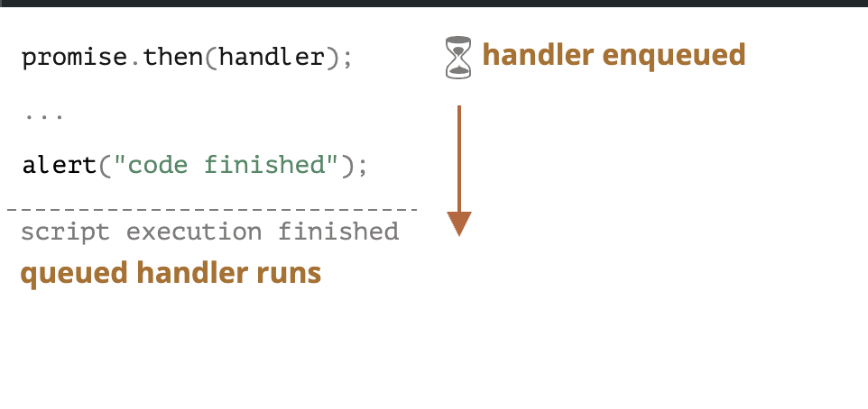

what are Promise in Javascript ?
They are similar to real life promise, how we make promise to someone that i am making promise that i will come meet you, same way we are just telling that, this piece code will get executed in future.
let promise = new Promise (function(resolve, reject) {
// executor (the producing code, "singer")
});Promise object in javascript have two main part, “producing code” and “consuming code”, producing code’s job is to produce the code, and consuming code’s job is tot consume the results from the produced code.
let myPromise = new Promise(function(myResolve, myReject) {
// "Producing Code" (May take some time)
myResolve(); // when successful
myReject(); // when error
});
// "Consuming Code" (Must wait for a fulfilled Promise)
myPromise.then(
function(value) { /* code if successful */ },
function(error) { /* code if some error */ }
);function passed to new Promise is called executor, which will execute them and then will make results for consuming code to consume the result.
so in short, executor runs automatically and attempts to do the job, when it finished with the task, it calls resolve if it was successful or reject if there was an error.
Promise Object have this these two internal properties: 
resolve example:
let promise = new Promise(function(resolve, reject) {
// the function is executed automatically when the promise is constructed
// after 1 second signal that the job is done with the result "done"
setTimeout(() => resolve("done"), 1000);
});state: “fulfilled”, result: “done”
reject example:
let promise = new Promise(function(resolve, reject) {
// after 1 second signal that the job is finished with an error
setTimeout(() => reject(new Error("Whoops!"``)``), 1000);
});state: “rejected”, result: “error”
there can be only single result or an error
let promise = new Promise(function(resolve, reject) {
resolve("done");
reject(new Error("...")); // ignored
setTimeout(() => resolve("...")); // ignored
});Consumer code:
.then part, when promises is either resolved or rejected, to get both values we use .then method on the promise object to get our result or error
let promise = new Promise(function(resolve, reject) {
setTimeout(() => resolve("done!"), 1000);
});
// resolve runs the first function in .then
promise.then(
result => alert(result), // shows "done!" after 1 second
error => alert(error) // doesn't run
);error example:
let promise = new Promise(function(resolve, reject) {
setTimeout(() => reject(new Error("Whoops!")), 1000);
});
// reject runs the second function in .then
promise.then(
result => alert(result), // doesn't run
error => alert(error) // shows "Error: Whoops!" after 1 second
);just like normal try catch block, we have same with promises also we have try to get desired result, catch to catch the error, and finally block to execute final code when every thing is done!
catch:
let promise = new Promise((resolve, reject) => {
setTimeout(() => reject(new Error("Whoops!")), 1000);
});
// .catch(f) is the same as promise.then(null, f)
promise.catch(alert); // shows "Error: Whoops!" after 1 secondfinally block don’t care about the result of promise, whether it was fulfilled or un fulfilled, it only knows to execute the code it is provided, and order matters in finally, if we write finally before the catch or then, it will run first,
new Promise((resolve, reject) => {
throw new Error("error");
})
.finally(() => alert("Promise ready")) // triggers first
.catch(err => alert(err)); // <-- .catch shows the errorwhat will be result ?
let promise = new Promise(function(resolve, reject) {
resolve("Good Morning!");
setTimeout(() => resolve("Good Night!"), 1000);
});
promise.then(alert);difference between callback and promise ?
callback can be only called once, there is result or some kind of trigger, promises can be called as many times you want even after promise is fulfilled to access the result as many times you want
chaining in promises:
we can chain promises, example:
new Promise(function(resolve, reject) {
setTimeout(() => resolve(1), 1000); // (*)
}).then(function(result) { // (**)
alert(result); // 1
return result * 2;
}).then(function(result) { // (***)
alert(result); // 2
return result * 2;
}).then(function(result) {
alert(result); // 4
return result * 2;
}); adding many then don’t means chaining, they don’t forward the result to the next thing, they act as independent promise
let promise = new Promise(function(resolve, reject) {
setTimeout(() => resolve(1), 1000);
});
promise.then(function(result) {
alert(result); // 1
return result * 2;
});
promise.then(function(result) {
alert(result); // 1
return result * 2;
});
promise.then(function(result) {
alert(result); // 1
return result * 2;
});Promise Apis:
There are 6 static methods of Promise class:
Promise.all:
we want to execute many promise in parallel and want to wait until all of them are resolved
Promise.all([
new Promise(resolve => setTimeout(() => resolve(1), 3000)), // 1
new Promise(resolve => setTimeout(() => resolve(2), 2000)), // 2
new Promise(resolve => setTimeout(() => resolve(3), 1000)) // 3
]).then(alert);the order of results will be same as the order of promise, even if the promise got rejected
A popular trick is to map the array of job and pass them into promise all
let urls = [
'https://api.github.com/users/kmj-007',
'https://api.github.com/users/remy',
'https://api.github.com/users/jeresig'
];
// map every url to the promise of the fetch
let requests = urls.map(url => fetch(url));
// Promise.all waits until all jobs are resolved
Promise.all(requests)
.then(responses => responses.forEach(
response => alert(`${response.url}: ${response.status}`)
));important thing to keep in mind about promise.all
If any of the promises is rejected, the promise returned by
Promise.allimmediately rejects with that error.
example of error:
Promise.all([
new Promise((resolve, reject) => setTimeout(() => resolve(1), 1000)),
new Promise((resolve, reject) => setTimeout(() => reject(new Error("Whoops!")), 2000)),
new Promise((resolve, reject) => setTimeout(() => resolve(3), 3000))
]).catch(alert); // Error: Whoops!also promise.all not cancel and does nothing about existing ongoing request, even if promise already got rejected, it will simply no longer watch them or care them, promise got rejected then it’s over, promise.all no longer cares about any thing.
in short,
Promise.all = all or nothing
Promise.allSettled:
this one is recently added, old browsers don’t support, they need polyfills and transpilors
Promise.allSettled just waits for all promises to settle, regardless of the result.
{status:"fulfilled", value:result}for successful responses,{status:"rejected", reason:error}for errors.
let urls = [
'https://api.github.com/users/iliakan',
'https://api.github.com/users/remy',
'https://no-such-url'
];
Promise.allSettled(urls.map(url => fetch(url)))
.then(results => {
//
[
{
status: 'fulfilled',
value: /* response data */
},
{
status: 'fulfilled',
value: /* response data */
},
{
status: 'rejected',
reason: /* error object */
}
]
//
}
});
});polyfill implementation for incompatible browsers:
if (!Promise.allSettled) {
const rejectHandler = reason => ({ status: 'rejected', reason });
const resolveHandler = value => ({ status: 'fulfilled', value });
Promise.allSettled = function(promises) {
const convertedPromises = promises.map(p => Promise.resolve(p).then(resolveHandler, rejectHandler));
return Promise.all(convertedPromises);
};
}Promise.race:
it’s like fastest finger first, whichever gets resolved first wins
Promise.race([
new Promise((resolve, reject) => setTimeout(() => resolve(1), 1000)),
new Promise((resolve, reject) => setTimeout(() => reject(new Error("Whoops!")), 2000)),
new Promise((resolve, reject) => setTimeout(() => resolve(3), 3000))
]).then(alert); // 1promise.any:
promise any just does what it tells, if any of the promise gets fulfilled, then it returns the result, then ignores the others, if all get rejected, then it combines the error(AggregateError) and returns it
Promise.any([
new Promise((resolve, reject) => setTimeout(() => reject(new Error("Whoops!")), 1000)),
new Promise((resolve, reject) => setTimeout(() => resolve(1), 2000)),
new Promise((resolve, reject) => setTimeout(() => resolve(3), 3000))
]).then(alert); // 1Promise.resolve/reject:
they are not used that much, because of async/await
Promise.resolve(value)– makes a resolved promise with the given value.Promise.reject(error)– makes a rejected promise with the given error.
Promise handlers .then/.catch/.finally are always asynchronous.
what does that mean:
let promise = Promise.resolve(); //even if the promise resolved first or immediately
promise.then(() => alert("promise done!"));
alert("code finished"); // this alert shows firstput it more simply, when a promise is ready, its .then/catch/finally handlers are put into the queue; they are not executed yet. When the JavaScript engine becomes free from the current code, it takes a task from the queue and executes it.
That’s why “code finished” in the example above shows first.

internal implementation if you are interested of apis of promise:
Promise.race:
function race(promises) {
// Return a new promise
return new Promise((resolve, reject) => {
promises.forEach(promise => {
// Wait for any promise to settle (resolve or reject)
//adding .then to all the promisese to which we are iterating
promise.then(
function(result) { resolve(result)},
function(error) { reject(error) }
);
});
});
}
Promise.all:
function all(promises) {
return new Promise((resolve, reject) => {
const result = [];
if (promises.length === 0) {
resolve(result);
return;
}
let countPending = promises.length;
promises.forEach((promise, index) => {
Promise.resolve(promise).then((value) => {
result[index] = value;
countPending--;
if (countPending === 0)resolve(result);
},
function error(error){
reject(error);
});
});
});
}Promise.allSettled:
function allSettled(promises) {
if (promises.length === 0) {
return Promise.resolve([]); // Resolve immediately if input array is empty
}
return new Promise((resolve, reject) => {
let result = [];
let settledCount = 0; // Initialize the settled count
promises.forEach((promise, idx) => {
Promise.resolve(promise).then(
value => {
result[idx] = { status: 'fulfilled', value };
},
reason => {
result[idx] = { status: 'rejected', reason };
}
).finally(() => {
settledCount++; // Increment the settled count in finally rather than doing it twice in value or reason function blocks
// Check if all promises have settled
if (settledCount === promises.length) {
resolve(result);
}
});
});
});
}
Promise.any:
function any(promises) {
// your code here
if (!promises.length) throw new AggregateError("No Promise passed");
return new Promise((resolve, reject) => {
let settledCount = 0, let errors = [];
promises.forEach((promise, index) => promise
.then(data => resolve(data))
.catch(err => {
errors[index] = err;
settledCount++;
if (settledCount === promises.length) reject(new AggregateError(
'No Promise in Promise.any was resolved',
errors
))
})
)
})
}
That’s it for now, will add more things when i learn more!